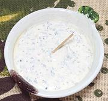

|
Yogurt Mint Sauce / DipBrazil - Molho iogurte hortelã | ||||
| Makes: Effort: Sched: DoAhead: |
1 cup ** 20 min Yes |
A simple but quite effective sauce or dip, often used with fried, roasted, and grilled meats. The quality of Yogurt and Sour Cream is important. | |||
|
2 1/2 1/2 1/2 1 1/2 1/4 1/3 1/4 |
T oz c c T t t t t |
Mint, fresh Onion, red Yogurt, plain (1) Sour Cream Dijon Mustard Lemon Juice Tabasco Sauce Salt Pepper |
Make - (20 min)
|